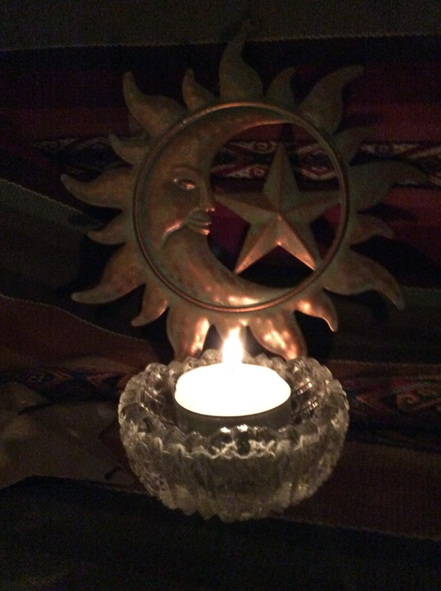

Moon Ceremoinies

The phases and cycles of the moon influence our energies. Actively engaging in ceremony to honour these cycles and the opportunities for grown that they offer us is a time honoured tradition in Ancient wisdom teachings. Observing and recognising these cycles as they move through the heavens and our physical and energetic bodies deepens our awareness of the interconnection of all things. As we dance with the ebb and flow of the vital energy that informs all life, our lives are enriched. A Native American prayer to the moon asks that “ our lives be renewed as she is renewed.” The moon teaches us of a constant cycle of completion and renewal. Observing ceremony in harmony with her cycles creates the opportunity for us to experience harmony , balance, and right relationship with the seasons and cycles of The Earth as they play out in our lives. Ceremonies to honour the new and full moon are offered in small groups to gain insight into the beautiful relationship between us and grandmother moon.